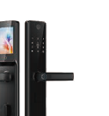

Préqualification de porte
Trouvez le bon pack et le bon lock body en 6 étapes.
En pratique, il faut surtout valider le type de porte, le mécanisme actuel, l’épaisseur et votre volume à équiper. Le résultat vous donne une recommandation cohérente.

Quiz de compatibilité
Quelle configuration pour votre porte ?
Étape 1
Quel est votre type de porte ?
Choisissez la matière ou la construction la plus proche de votre porte actuelle.
Étape 2
Quel type de serrure avez-vous aujourd’hui ?
C’est ce qui permet d’orienter le mécanisme interne sans partir à l’aveugle.
Étape 3
Quelle est l’épaisseur de la porte ?
Indiquez une mesure approximative. Elle sert à évaluer le kit et le lock body adaptés.
45mm
Étape 4
Y a-t-il du Wi-Fi à proximité ?
Le Wi-Fi n’est pas toujours obligatoire, mais il change la qualité du pilotage à distance.
Étape 5
Combien de portes voulez-vous équiper ?
Le volume change la logique de pack, de support et de déploiement.
Étape 6
Quelle plateforme utilisez-vous ?
Plus l’exploitation est multicanale, plus il faut cadrer l’automatisation en amont.
Recommandation DigitalDoor
Pack Business
449 €

Produit recommandé
DigitalDoor PRO Camera
Lock body conseillé
Série 85 · réf. 1407
Ce qui est inclus
Installation technicien + automatisation.